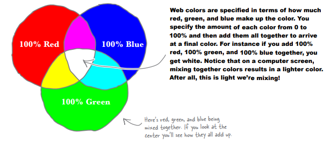
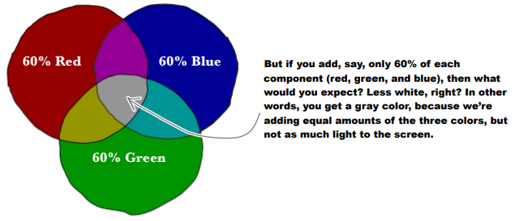
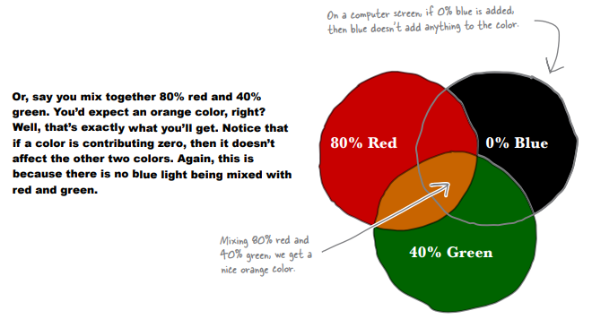
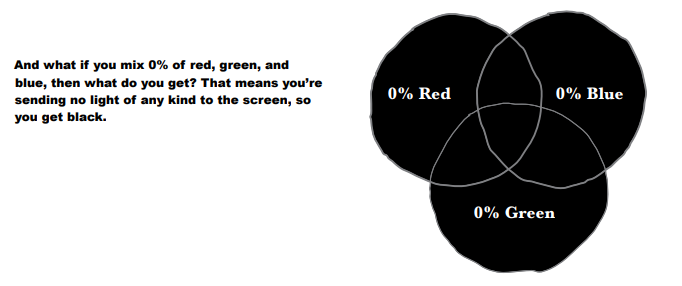
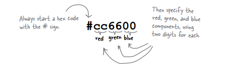
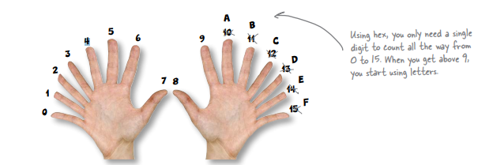
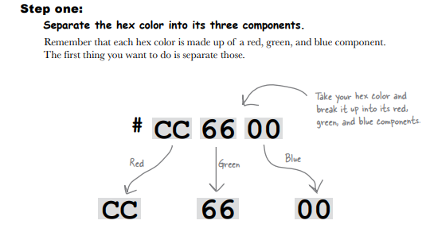
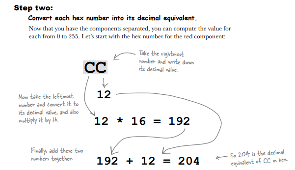
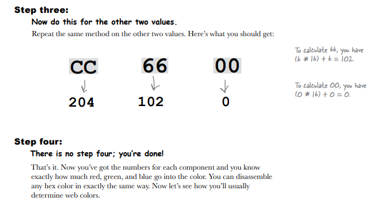
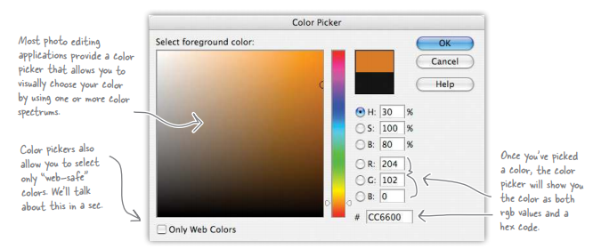

You’re starting to see that there are lots of places you can add color to your pages: background colors, border colors, and soon, font colors as well. But how do colors on a computer actually work? Let’s take a look.
   CSS gives you a few ways to specify colors. You can specify the name of a color, specify a color in terms of its relative percentages in red, green, and blue, or you can specify your color using a hex code, which is shorthand for describing the red, green, and blue components of the color.
While you might think that the Web would have decided on one format by now, all these formats are commonly used, so it’s good to know about them all. However, hex codes are by far the most common way of specifying web colors. But remember that all these ways of specifying color ultimately just tell the browser the amount of red, green, and blue that goes into a color. Let’s work through each method of specifying colors in CSS.
Specify color by name
The most straightforward way to describe a color in CSS is just to use its name. There are 16 basic colors and 150 extended colors that can be specified this way. Let’s say you want to specify the color “silver” as the background color of a body element; here’s how you write that in CSS:
body {background-color: silver;}
So, to specify a color by name, just type the color name as the value of the property. CSS color names are case-insensitive, so you can type silver, Silver, or SILVER, and all will work. Here are the 16 basic colors in CSS. Remember, these are just names for predefined amounts of red, green, and blue
Specify color in red, green, and blue values
You can also specify a color as the amount of red, green, and blue. So, say you wanted to specify the orange color we looked at a couple of pages back, which consisted of 80% red, 40% green, and 0% blue. Here’s how you do that:
body {
background-color: rgb(80%, 40%, 0%);
}
You can also specify the red, green, and blue values as a numeric value between 0 and 255. So, instead of 80% red, 40% green, and 0% blue, you can use 204 red, 102 green, and 0 blue. Here’s how you use straight numeric values to specify your color:
body {
background-color: rgb(204, 102, 0);
}
Specify color using hex codes
Now let’s tackle those funky-looking hex codes. Here’s the secret to them: each set of two digits of a hex code just represents the red, green, and blue component of the color. So the first two digits represent the red, the next two the green, and the last two represent the blue. Like this:
The first thing you need to know about hex codes is that they aren’t based on 10 digits (0 to 9); they’re based on 16 digits (0 to F). Here’s how hex digits work:
So if you see a hex number like B, you know that just means 11. But what does BB, or E1, or FF mean? Let’s disassemble a hex color and see what it actually represents. In fact, here’s how you can do that for any hex color you might encounter.
  You’ve now got a few different ways to specify colors. Take our orange color that is made up of 80% red, 40% green, and 0% blue. In CSS, we could specify this color in any of these ways:
body {
background-color: rgb(80%, 40%, 0%);}
body {
background-color: rgb(204, 102, 0);}
body {
background-color: #cc6600;
}
The two most common ways to find web colors are to use a color chart or an application like Photoshop Elements. You’ll also find a number of web pages that allow you to choose web colors and translate between rgb and hex codes. Let’s check out Photoshop Elements (most photo editing applications offer the same functionality).
- Web colors are created by mixing different amounts of red, green, and blue.
- If you mix 100% red, 100% green, and 100% blue, you will get white.
- If you mix 0% red, 0% green, and 0% blue, you will get black.
- CSS has 16 basic colors, including black, white, red, blue, and green, and 150 extended colors.
- Hex codes representing colors have six digits, and each digit can be from 0–F. The first two digits represent the amount of red, the second two the amount of green, and the last two the amount of blue.